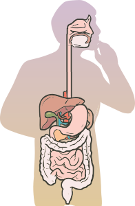
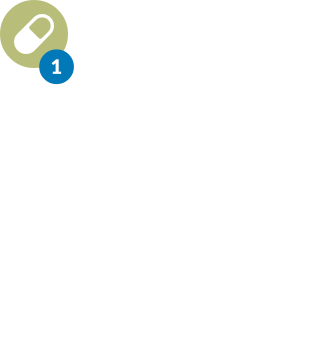
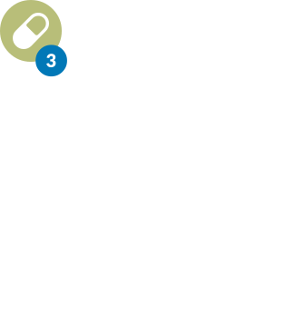

Arraste cada um dos medicamentos para boca do paciente e veja como age o fármaco na corrente sanguínea.



Uma vez na corrente sanguínea, o fármaco fica ligado às proteínas plasmáticas. Quando ligado à proteína o fármaco não tem como ligar-se ao sítio de ação. Assim, sua porção ativa será apenas a fração livre e não a ligada às proteínas. Essa ligação retarda o processo de biotransformação e de excreção, o que faz com que o ativo se mantenha mais tempo no organismo. Por outro lado, alguns fármacos se ligam fortemente (≈ 90%) a proteínas plasmáticas, tais como anticoagulantes orais, fenitoína, estrógeno, glicocorticoides, diazepam, AINEs e outros.

A competição entre dois fármacos pela ligação às proteínas plasmáticas resulta em um aumento da fração livre de um ou ambos os fármacos. Como resultado, pode haver intensificação da resposta farmacológica e/ou tóxica. Uma proteína plasmática muito importante nesse processo é a albumina e, por isso, seu excesso ou redução induz aumento ou redução da fração livre do medicamento e, por conseguinte, pode elevar ou reduzir a toxicidade do ativo.
Um exemplo disso ocorre com o tamoxifeno, um modulador seletivo de receptores de estrogênio. Na presença de curcumina, a afinidade de ligação do tamoxifeno à albumina sérica humana se reduz, aumentando o efeito do fármaco, incluindo a toxicidade. Outro exemplo inclui a elevada afinidade de flavonoides pela albumina sérica, aumentando a fração livre de fármacos com menor afinidade pela albumina e, consequentemente, o efeito ou a toxicidade.